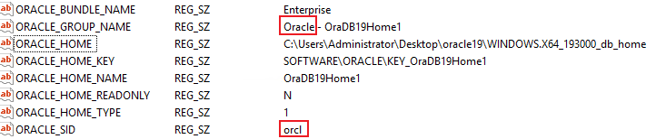

Before performing a backup, ensure that the host where the Oracle database is located must be powered on and that the Oracle database must be in the Open state. The following procedure describes how to check and configure the Open state of the Oracle database.
Procedure
- Log in to the Oracle database host and query the database installation user and instance name.
- If the Linux OS is used, perform the following operations:
- Use PuTTY to log in to the Oracle database host.
- Run the following command to query the name of the user who installs the database:
ps -ef | grep pmon
The command output similar to the following is displayed. The user in the row where xxx_pmon_hwdb is located is the user who installs the database. hwdb in xxx_pmon_hwdb is the database instance name. The oracle user is used as an example in the subsequent operations.

- If the Windows OS is used, perform the following operations:
- Log in to the Oracle database host as the system administrator.
- Press Win+R to open the Run window.
- Enter regedit to open the registry.
- Obtain the corresponding value from the HKEY_LOCAL_MACHINE\SOFTWARE\Oracle\KEY_OraDB19Home1 path.The database installation username is obtained from the value of ORACLE_GROUP_NAME, and the database instance name is the value of ORACLE_SID.

19Home1 in the path is only an example. Replace it with the actual one.

- If the Linux OS is used, perform the following operations:
- Run the following command to check whether the database is started.
- If the Linux OS is used, run the following command:
ps -ef|grep ora
If information similar to the following is displayed and contains the ora_xx process, the database has been started:
[oracle@18csingle45 ~]$ ps -ef|grep ora oracle 76403 1 0 12:56 ? 00:00:10 ora_m002_orcl oracle 159932 1 0 14:20 ? 00:00:05 ora_m003_orcl oracle 175468 1 0 Apr07 ? 00:00:12 ora_pmon_orcl oracle 175470 1 0 Apr07 ? 00:00:05 ora_clmn_orcl oracle 175472 1 0 Apr07 ? 00:00:26 ora_psp0_orcl oracle 175474 1 0 Apr07 ? 00:40:42 ora_vktm_orcl oracle 175478 1 0 Apr07 ? 00:00:08 ora_gen0_orcl oracle 175481 1 0 Apr07 ? 00:00:04 ora_mman_orcl oracle 175485 1 0 Apr07 ? 00:00:50 ora_gen1_orcl oracle 175488 1 0 Apr07 ? 00:00:09 ora_diag_orcl oracle 175490 1 0 Apr07 ? 00:00:04 ora_ofsd_orcl oracle 175493 1 0 Apr07 ? 00:01:27 ora_dbrm_orcl oracle 175495 1 0 Apr07 ? 00:02:32 ora_vkrm_orcl oracle 175497 1 0 Apr07 ? 00:00:09 ora_svcb_orcl oracle 175499 1 0 Apr07 ? 00:00:25 ora_pman_orcl oracle 175501 1 0 Apr07 ? 00:02:35 ora_dia0_orcl oracle 175503 1 0 Apr07 ? 00:00:19 ora_dbw0_orcl oracle 175505 1 0 Apr07 ? 00:00:13 ora_lgwr_orcl oracle 175507 1 0 Apr07 ? 00:00:35 ora_ckpt_orcl oracle 175509 1 0 Apr07 ? 00:00:02 ora_lg00_orcl oracle 175511 1 0 Apr07 ? 00:00:06 ora_smon_orcl oracle 175513 1 0 Apr07 ? 00:00:01 ora_lg01_orcl oracle 175515 1 0 Apr07 ? 00:00:18 ora_smco_orcl oracle 175517 1 0 Apr07 ? 00:00:04 ora_w000_orcl oracle 175519 1 0 Apr07 ? 00:00:02 ora_reco_orcl oracle 175521 1 0 Apr07 ? 00:00:04 ora_w001_orcl oracle 175523 1 0 Apr07 ? 00:00:17 ora_lreg_orcl oracle 175525 1 0 Apr07 ? 00:00:04 ora_pxmn_orcl oracle 175529 1 0 Apr07 ? 00:01:05 ora_mmon_orcl oracle 175531 1 0 Apr07 ? 00:01:02 ora_mmnl_orcl oracle 175533 1 0 Apr07 ? 00:00:02 ora_d000_orcl oracle 175535 1 0 Apr07 ? 00:00:02 ora_s000_orcl oracle 175537 1 0 Apr07 ? 00:00:03 ora_tmon_orcl oracle 177437 1 0 Apr07 ? 00:00:02 ora_arc0_orcl oracle 177439 1 0 Apr07 ? 00:00:02 ora_tt00_orcl oracle 177441 1 0 Apr07 ? 00:00:02 ora_tt01_orcl oracle 177444 1 0 Apr07 ? 00:00:02 ora_arc1_orcl oracle 177450 1 0 Apr07 ? 00:00:02 ora_arc2_orcl oracle 177457 1 0 Apr07 ? 00:00:02 ora_arc3_orcl oracle 177459 1 0 Apr07 ? 00:00:07 ora_tt02_orcl oracle 177483 1 0 Apr07 ? 00:00:02 ora_aqpc_orcl oracle 177494 1 0 Apr07 ? 00:00:04 ora_w002_orcl oracle 177499 1 0 Apr07 ? 00:00:07 ora_p000_orcl oracle 177501 1 0 Apr07 ? 00:00:07 ora_p001_orcl oracle 177503 1 0 Apr07 ? 00:00:07 ora_p002_orcl oracle 177505 1 0 Apr07 ? 00:00:07 ora_p003_orcl oracle 177507 1 0 Apr07 ? 00:03:35 ora_cjq0_orcl oracle 178617 1 0 Apr07 ? 00:00:04 ora_w003_orcl oracle 179771 1 0 Apr07 ? 00:00:04 ora_w004_orcl oracle 179794 1 0 Apr07 ? 00:00:02 ora_qm02_orcl oracle 179800 1 0 Apr07 ? 00:00:03 ora_q002_orcl oracle 179804 1 0 Apr07 ? 00:00:02 ora_q003_orcl root 184058 183212 0 14:45 pts/0 00:00:00 su - oracle oracle 184059 184058 0 14:45 pts/0 00:00:00 -bash oracle 186418 1 0 14:46 ? 00:00:01 ora_m005_orcl root 186471 184059 0 14:46 pts/0 00:00:00 su - oracle oracle 186475 186471 0 14:46 pts/0 00:00:00 -bash oracle 191769 1 0 Apr07 ? 00:00:05 ora_w005_orcl oracle 191773 1 0 Apr07 ? 00:00:04 ora_w006_orcl oracle 191812 1 0 Apr07 ? 00:00:04 ora_w007_orcl oracle 195441 1 0 14:55 ? 00:00:00 ora_m000_orcl oracle 198133 239014 0 14:58 pts/1 00:00:00 sqlplus oracle 198175 198133 0 14:58 ? 00:00:00 oracleorcl (DESCRIPTION=(LOCAL=YES)(ADDRESS=(PROTOCOL=beq))) oracle 213064 186475 0 15:13 pts/0 00:00:00 ps -ef oracle 213065 186475 0 15:13 pts/0 00:00:00 grep --color=auto ora root 239013 10102 0 Apr07 pts/1 00:00:00 su - oracle oracle 239014 239013 0 Apr07 pts/1 00:00:00 -bash
- If the Windows OS is used, perform the following operations:
- Press Win+R to open the Run window.
- Enter services.msc to go to the service page and check the service status.
If the status of the OracleServiceXXX service is Running, the database has been started.
- If the Linux OS is used, run the following command:
- Run the following commands to log in to the Oracle database instance.
- OS authentication:
- If the Linux OS is used, run the following commands:
export ORACLE_SID=Database instance name
sqlplus / as sysdba
- If the Windows OS is used, perform the following operations:
- Press Win+R to open the Run window.
- Enter cmd and run the following commands:
set ORACLE_SID=Database instance name
sqlplus / as sysdba
- If the Linux OS is used, run the following commands:
- Database authentication:
- If the Linux OS is used, run the following commands:
export ORACLE_SID=Database instance name
sqlplus
Enter the name of a user with the sysdba permissions as prompted:
username as sysdba
Enter the password as prompted.
- If the Windows OS is used, perform the following operations:
- Press Win+R to open the Run window.
- Enter cmd and run the following commands:
set ORACLE_SID=Database instance name
sqlplus
Enter the name of a user with the sysdba permissions as prompted:
username as sysdba
Enter the password as prompted.
- If the Linux OS is used, run the following commands:
- OS authentication:
- If it is detected in 2 that the database process is not started, run the following command to start the database process. Otherwise, skip this step.
startup;
- Run the following command to check the database status:
select instance_name,status from v$instance;
- If the value of STATUS is open in the command output, the database is in the Open state.
- If the value of STATUS is not open in the command output, contact the administrator to enable the database to be in the open state and then back up the database.
SQL> select instance_name,status from v$instance; INSTANCE_NAME STATUS ---------------- ------------ orcl open